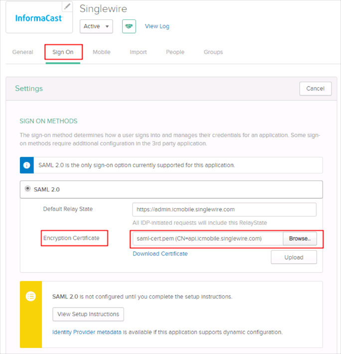
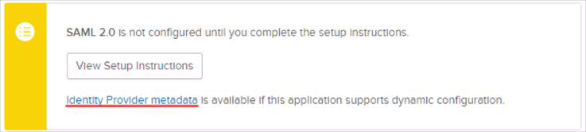
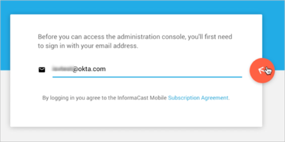

Save the following as saml-cert.pem:
Sign into the Okta Admin Dashboard to generate this variable.
For Encryption Certificate, click Browse to locate the saml-cert.pem certificate you saved earlier, then click Upload as shown below:
Click Save.

Download the file by clicking on Identity Provider metadata, and then email the downloaded file to support@singlewire.com.

The Singlewire InformaCast Mobile support team will process your request. After receiving a confirmation email, you can start assigning people to the application.
Done!
Notes:
SP-initiated flows are supported.
IDP-initiated flows and Just In Time (JIT) provisioning are not supported.Enter your email address.
Click the arrow, as shown below:
